<title>Banchi Phone Picks</title>
<meta name="claude:viewport-fit-sides" content="cover">
<link rel="preconnect" href="https://fonts.googleapis.com">
<link rel="stylesheet" href="https://fonts.googleapis.com/css2?family=Atkinson+Hyperlegible:wght@400;700&family=Bricolage+Grotesque:opsz,wght@12..96,600;12..96,800&family=JetBrains+Mono:wght@400;600&display=swap">
<style>
/* Layout: one reading column of questions; each question's options sit side by side as phone pictures, wrapping on a phone. */
:root {
  --bg: #f6f7fc;
  --surface: #ffffff;
  --fg: #171a2b;
  --muted: #5b6079;
  --line: #dde0ee;
  --blue: #3d5af1;
  --blue-text: #2f49d6;
  --blue-soft: #e8ecff;
  --on-blue: #ffffff;
  --display: "Bricolage Grotesque", "Avenir Next", system-ui, sans-serif;
  --body: "Atkinson Hyperlegible", system-ui, -apple-system, "Segoe UI", sans-serif;
  --mono: "JetBrains Mono", ui-monospace, "SFMono-Regular", Menlo, monospace;
}
@media (prefers-color-scheme: dark) { :root:not([data-theme="light"]) {
  --bg: #0f1120; --surface: #181b2e; --fg: #e9ebf7; --muted: #a2a7c2; --line: #2b3050;
  --blue: #3d5af1; --blue-text: #a3afff; --blue-soft: #1f2650; --on-blue: #ffffff; color-scheme: dark } }
:root[data-theme="dark"] {
  --bg: #0f1120; --surface: #181b2e; --fg: #e9ebf7; --muted: #a2a7c2; --line: #2b3050;
  --blue: #3d5af1; --blue-text: #a3afff; --blue-soft: #1f2650; --on-blue: #ffffff; color-scheme: dark }

body { background: var(--bg); color: var(--fg); font: 16px/1.55 var(--body); }
.wrap { max-width: 1120px; margin: 0 auto; padding-block: 32px 64px;
  padding-left: max(16px, env(safe-area-inset-left, 0px)); padding-right: max(16px, env(safe-area-inset-right, 0px));
  display: grid; gap: 48px; }
h1, h2, h3 { font-family: var(--display); text-wrap: balance; margin: 0; line-height: 1.15; }
h1 { font-size: clamp(30px, 5vw, 46px); font-weight: 800; letter-spacing: -0.01em; }
h2 { font-size: clamp(22px, 3vw, 28px); font-weight: 800; }
h3 { font-size: 18px; font-weight: 600; }
p { margin: 0; max-width: 68ch; }
.eyebrow { font: 600 12px/1 var(--mono); letter-spacing: .08em; text-transform: uppercase; color: var(--blue-text); }
.muted { color: var(--muted); }
header { display: grid; gap: 14px; }
.facts { display: flex; flex-wrap: wrap; gap: 8px; }
.fact { font: 13px/1.3 var(--mono); padding: 6px 10px; border: 1px solid var(--line); border-radius: 6px; background: var(--surface); }
.fact b { color: var(--blue-text); font-weight: 600; }

section.q { display: grid; gap: 18px; }
.qhead { display: grid; gap: 6px; }
.options { display: grid; gap: 16px; grid-template-columns: repeat(auto-fit, minmax(220px, 1fr)); }
.options.wide { grid-template-columns: 1fr; }
.opt { background: var(--surface); border: 1px solid var(--line); border-radius: 10px; padding: 14px;
  display: grid; gap: 10px; align-content: start; min-width: 0; }
.opt.picked { border-color: var(--blue); box-shadow: 0 0 0 1px var(--blue); }
.opt-top { display: flex; gap: 10px; align-items: baseline; flex-wrap: wrap; }
.letter { font: 700 14px/1 var(--mono); background: var(--blue-soft); color: var(--blue-text); border-radius: 4px; padding: 4px 7px; }
.opt img { width: 100%; height: auto; border-radius: 8px; border: 1px solid var(--line); display: block; background: var(--bg); }
.wide .opt img { max-height: 520px; object-fit: contain; }
dl { margin: 0; display: grid; grid-template-columns: auto 1fr; gap: 4px 10px; font-size: 15px; }
dt { font: 600 12px/1.9 var(--mono); text-transform: uppercase; letter-spacing: .06em; color: var(--muted); }
dd { margin: 0; min-width: 0; }
.tags { display: flex; gap: 6px; flex-wrap: wrap; }
.tag { font: 600 12px/1 var(--mono); padding: 5px 8px; border-radius: 999px; background: var(--blue); color: var(--on-blue); }
.tag.alt { background: transparent; color: var(--blue-text); border: 1px solid var(--blue-text); }
.verdict { background: var(--surface); border: 1px solid var(--line); border-radius: 10px; padding: 16px; display: grid; gap: 8px; }
ul { margin: 0; padding-left: 20px; display: grid; gap: 6px; max-width: 72ch; }
code { font: 14px var(--mono); }
a { color: var(--blue-text); }
a:focus-visible { outline: 2px solid var(--blue); outline-offset: 2px; }
</style>

<main class="wrap">
<header>
  <span class="eyebrow">Step d4 · blind design test · for shiv</span>
  <h1>A phone app for Banchi: four picks</h1>
  <p class="muted">A blind designer drew three directions for the job "bulk-list pre-sorted singles with zero attention per card, and know where every card physically is", for the seller and for the helper at the shelf. A separate design reviewer checked every screen at both Duo sizes in light and dark. Every option below has its own picture of the thing being decided.</p>
  <div class="facts">
    <span class="fact">Assumed Duo size: <b>360×780 folded</b>, <b>760×780 unfolded</b> (none written anywhere; confirm)</span>
    <span class="fact">Review: <b id="review-state">passed, round 3 of 3</b></span>
    <span class="fact">Colour: Banchi blue <b>#3d5af1</b> only</span>
  </div>
</header>

<section class="q" id="q1">
  <div class="qhead">
    <span class="eyebrow">Question 1</span>
    <h2>Which direction or directions do you keep?</h2>
    <p class="muted">Each picture shows four states of the direction on the folded phone: empty, loading, a full list and an error.</p>
  </div>
  <div class="options wide">
    <article class="opt">
      <div class="opt-top"><span class="letter">A</span><h3>D1 · Four tabs</h3></div>
      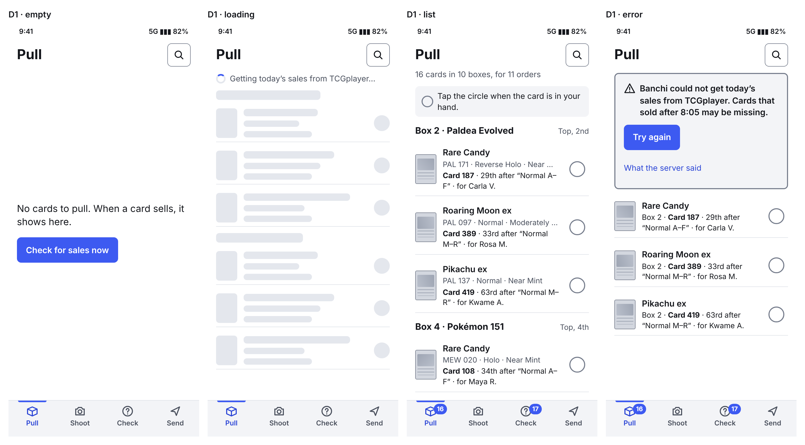
      <dl><dt>Gain</dt><dd>Familiar. Every act is one tap away. Follows the house tab-bar rule. Easy to build.</dd>
          <dt>Loss</dt><dd>The helper sees seller tabs and badges they never use, and reads a long list.</dd></dl>
    </article>
    <article class="opt picked">
      <div class="opt-top"><span class="letter">B</span><h3>D2 · Today</h3>
        <span class="tags"><span class="tag">Designer's pick</span><span class="tag">Reviewer's pick</span></span></div>
      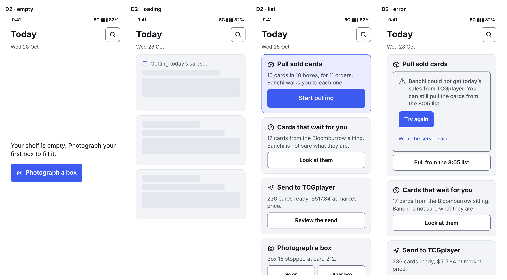
      <dl><dt>Gain</dt><dd>Screens explain themselves. The helper sees one card per screen in plain sentences. The next job is always on top.</dd>
          <dt>Loss</dt><dd>No tab bar (breaks a house rule). No overview of every pull at once. More taps for a seller who knows the app.</dd></dl>
    </article>
    <article class="opt">
      <div class="opt-top"><span class="letter">C</span><h3>D3 · Shelf (the bold one)</h3></div>
      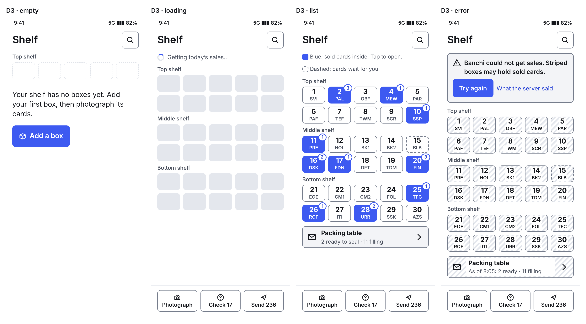
      <dl><dt>Gain</dt><dd>The screen matches the shelf in front of the helper. A card's place in its box is a picture, not a number.</dd>
          <dt>Loss</dt><dd>New to everyone. The grid stops fitting at about 30 boxes. Each real box needs a number label.</dd></dl>
    </article>
  </div>
  <div class="verdict"><p><b>Both picks: B</b>, and take D3's box drawing for the helper's "I cannot find it" screen. The reviewer: only D2 serves both people with no defect in its structure.</p></div>
</section>

<section class="q" id="q2">
  <div class="qhead">
    <span class="eyebrow">Question 2</span>
    <h2>How does the helper find the card inside the box?</h2>
  </div>
  <div class="options">
    <article class="opt">
      <div class="opt-top"><span class="letter">A</span><h3>Count from the front</h3></div>
      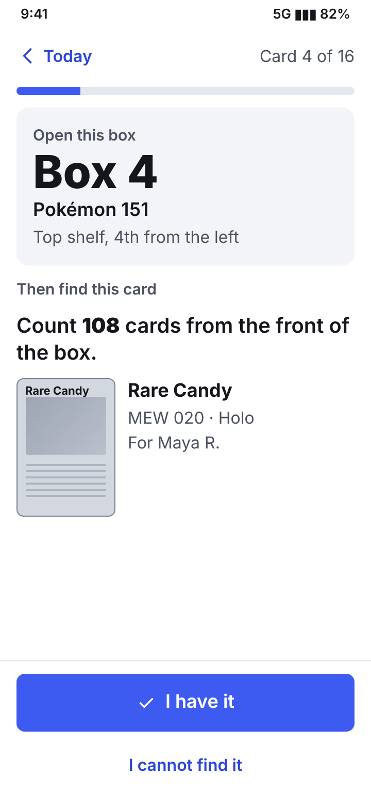
      <dl><dt>Gain</dt><dd>One number, always true.</dd><dt>Loss</dt><dd>Counting 108 cards by hand is slow and easy to get wrong.</dd></dl>
    </article>
    <article class="opt picked">
      <div class="opt-top"><span class="letter">B</span><h3>Count from a divider</h3>
        <span class="tags"><span class="tag">Designer</span><span class="tag">Reviewer</span></span></div>
      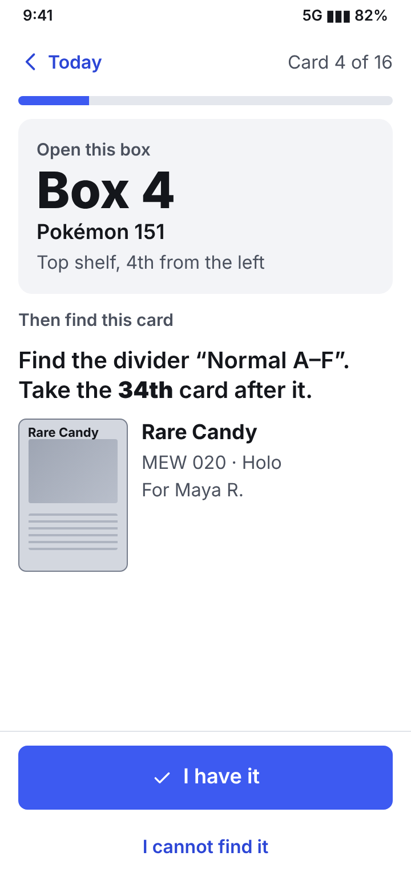
      <dl><dt>Gain</dt><dd>Short counts from a landmark.</dd><dt>Loss</dt><dd>Needs a divider about every 100 cards, named the same on the phone and in the box.</dd></dl>
    </article>
    <article class="opt">
      <div class="opt-top"><span class="letter">C</span><h3>Show the two neighbours</h3>
        <span class="tags"><span class="tag alt">Both: as the fallback</span></span></div>
      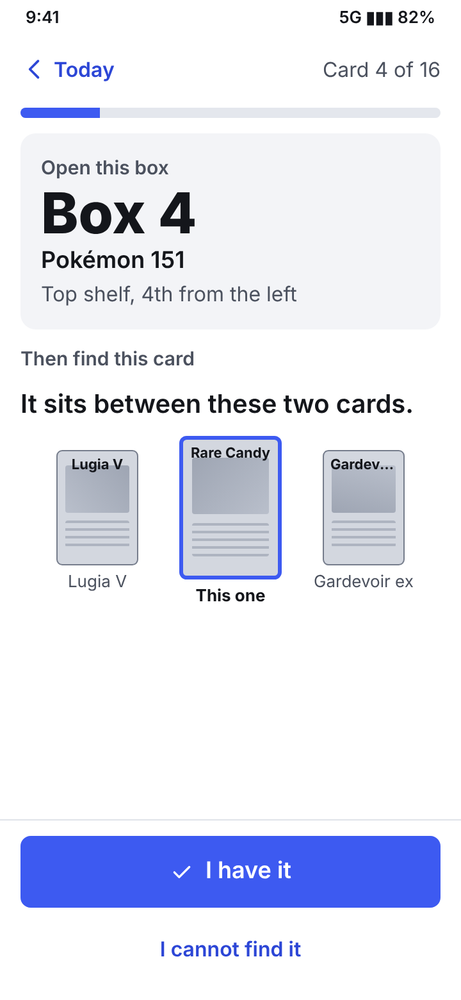
      <dl><dt>Gain</dt><dd>No counting. Looks like the box.</dd><dt>Loss</dt><dd>Still needs a start point. A neighbour that sold and left breaks the hint.</dd></dl>
    </article>
  </div>
</section>

<section class="q" id="q3">
  <div class="qhead">
    <span class="eyebrow">Question 3</span>
    <h2>When does the seller settle the cards Banchi is not sure of?</h2>
  </div>
  <div class="options">
    <article class="opt">
      <div class="opt-top"><span class="letter">A</span><h3>During the sitting</h3></div>
      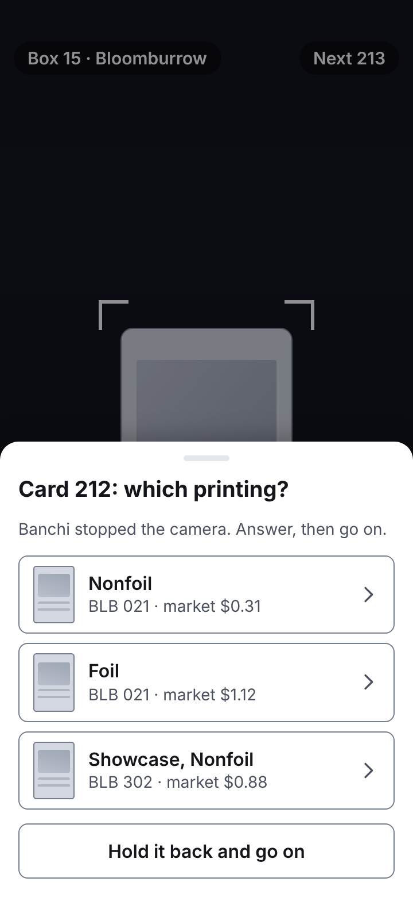
      <dl><dt>Gain</dt><dd>The card is still in hand.</dd><dt>Loss</dt><dd>Breaks "zero attention per card". The stack waits.</dd></dl>
    </article>
    <article class="opt picked">
      <div class="opt-top"><span class="letter">B</span><h3>After, in a pile</h3>
        <span class="tags"><span class="tag">Designer</span><span class="tag">Reviewer</span></span></div>
      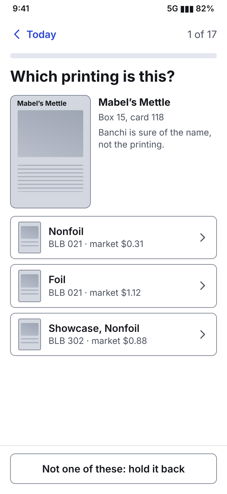
      <dl><dt>Gain</dt><dd>The sitting never stops. All answers in one go. Nothing is guessed.</dd><dt>Loss</dt><dd>The seller may need to find the card again for a close look (its place is shown).</dd></dl>
    </article>
    <article class="opt">
      <div class="opt-top"><span class="letter">C</span><h3>Never by hand</h3></div>
      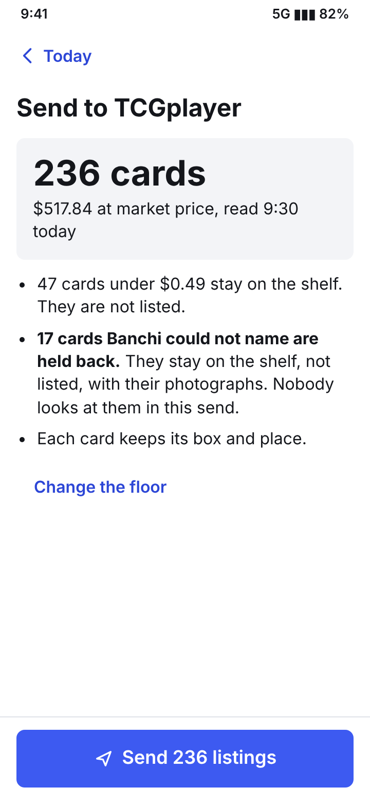
      <dl><dt>Gain</dt><dd>Zero attention.</dd><dt>Loss</dt><dd>Unsure cards are often the valuable printings, and they never get listed.</dd></dl>
    </article>
  </div>
</section>

<section class="q" id="q4">
  <div class="qhead">
    <span class="eyebrow">Question 4</span>
    <h2>Does the helper get a home of their own?</h2>
  </div>
  <div class="options">
    <article class="opt">
      <div class="opt-top"><span class="letter">A</span><h3>One home for both</h3></div>
      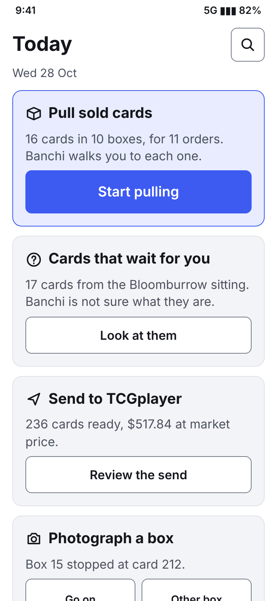
      <dl><dt>Gain</dt><dd>One app and one set of screens to learn and build.</dd><dt>Loss</dt><dd>The helper sees seller jobs and money.</dd></dl>
    </article>
    <article class="opt picked">
      <div class="opt-top"><span class="letter">B</span><h3>A helper home</h3>
        <span class="tags"><span class="tag">Designer</span><span class="tag">Reviewer</span></span></div>
      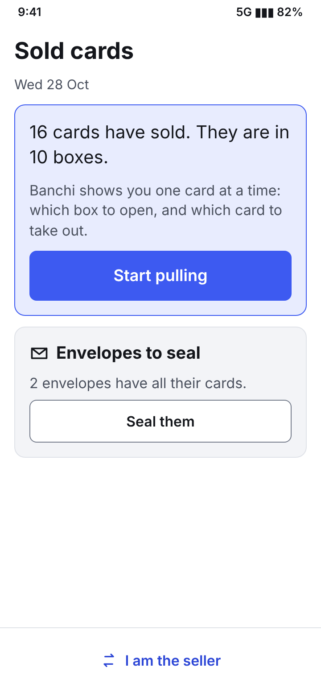
      <dl><dt>Gain</dt><dd>Nothing on screen the helper does not use.</dd><dt>Loss</dt><dd>One more mode. The switch must not confuse the helper.</dd></dl>
    </article>
  </div>
</section>

<section class="q" id="also">
  <div class="qhead">
    <span class="eyebrow">Also needs your word</span>
    <h2>Smaller grants inside the mockups</h2>
  </div>
  <ul>
    <li><b>Duo size.</b> The mockups assume 360×780 folded and 760×780 unfolded. Nothing in the repos gives a size.</li>
    <li><b>No tab bar in D2 and D3.</b> This breaks the house rule that phone navigation uses a bottom tab bar.</li>
    <li><b>Auto-shoot.</b> The camera fires when a still card fills the guide. Keep it only if it can be built.</li>
    <li><b>Buyer name on the envelope</b>, with the order number only in the order detail.</li>
    <li><b>A number label on each real box</b> (Box 1 to 30). This asks the seller for a physical step.</li>
  </ul>
  <p class="muted">Files: <code>designs/d4-banchi-phone/</code> on the roadmap branch. The full mockup is <code>banchi-phone-blind-1.html</code>, the notes are <code>banchi-phone-blind-1-notes.md</code> and every state at both sizes and themes is in <code>png/</code>. All cards, orders and buyers are made up.</p>
</section>
</main>
